Class 13. GLMs in Decision Contexts Part IV
- Supplemental background reading(s):
- Bolker, B. M., M. E. Brooks, C. J. Clark, S. W. Geange, J. R. Poulsen, M. H. H. Stevens, and J.-S. S. White. 2009. Generalized linear mixed models: a practical guide for ecology and evolution. Trends in Ecology & Evolution 24:127-135. pdf
- O’Hara, R. B., and D. J. Kotze. 2010. Do not log-transform count data. Methods in Ecology and Evolution 1:118-122. pdf
- Assignment due: HW2 is due by 5pm!
- Link to class recording YouTube
- Today’s R script Class-13.R
Objectives
By the end of this tutorial you should be able to:
- Understand generalized linear models (GLMs)
- Understand log link function
- Predicting outcomes from a GLM assuming a Poisson distribution
- Understand offsets and overdispersion
- Using analysis in decision contexts to predict counts
Preliminaries
- If you want to play along in class download th
- Once you have the files where you want them, open the R script and be sure to check the working directory
getwd()and make sure it is where your folder is. - If your working directory is not correct, you can set it in Rstudio: “Session –> Set Working Directory –> To source file location”. Or you can use the
setwd()in the console.
Where are we?
By this point you should recognize that the science and subsequent analyses we perform to support our claims of understanding can be used to make support a formal decision making process. Contrast this with an informal decision process where likely outcomes are confined in mental models. Additionally, using models and associated uncertainty to predict outcomes allows us to move beyond vague management recommendations to providing a decision support tool. In the context of a decision model like the Bayesian Decision Networks (BDN) we have been using these predictions provide the means to link parent and child nodes, in other words, our analyses provide the conditional probabilities of the possible outcomes. This class will complete our tour of GLMs with a common distribution for counts in natural resources, the Poisson.
Background
Count data is common in natural resources. Examples of counts include:
- Fecundity-capacity to produce offspring
- Catch-the number of critters captured
- Abundance-number of critters
- Counts-Redds, nests, clutches, mortalities
In general the Poisson distribution works well for counts because it predicts a discrete outcome, an integer, constrained to values of 0 or greater. This property lends to its common use as a distribution in analysis of natural resource data. Maybe those cool kids from class 10 were cooler than we thought. Historically, the Poisson distribution was developed as a discrete frequency distribution that calculated the probability of a number of independent events occurring in a fixed time. This sort of sounds like the binomial distribution we learned about before but there is no binomial coefficient (i.e., the number of trials). For example, it is common to use the Poisson to calculate the expected outcomes of a survival process where the population abundance is multiplied by the survival rate (i.e., \(\text{Survivors}\sim Poisson(\text{Abundance}\cdot Survival\)). This could alternatively be done using a binomial as \(\text{Survivors}\sim Binomial(\text{Abundance},Survival\). As long as \(\text{Abundance}\) is high and \(Survival\) is low the Poisson and Binomial give similar expectations. Let’s explore this and learn some new and refine our R skills along the way.
Poisson versus Binomial
We can compare the expected outcomes of the Poisson and the binomial using simulation from the rpois() and rbinom() functions.
Let’s evaluate how the 2 distributions behave for a survival rate S equal to 0.2. We will simulate the expected number of survivors for varying N values, specifically, 10, 50, 100, 1000, and 10000. First let’s make our objects S and N.
S<-seq(from=0.1,to=1,by=0.05) # SET SURVIVAL
N<- c(10,50,100,500,1000)Now let’s look at what happens if we generate 50,000 stochastic replicates from a Poisson and a binomial given our S and N equal to 10. Recall that 10 was the first element in our vector of N so we can use the syntax N[1] to get the first value of our vector of abundances. You can allways use ?rpois and ?rbinom to find out about the functions.
survivors_pois<-rpois(50000,S*N[1])
survivors_bin<-rbinom(50000,N[1],S)We can use the hist() function to visualize the expected outcomes.
hist(survivors_pois)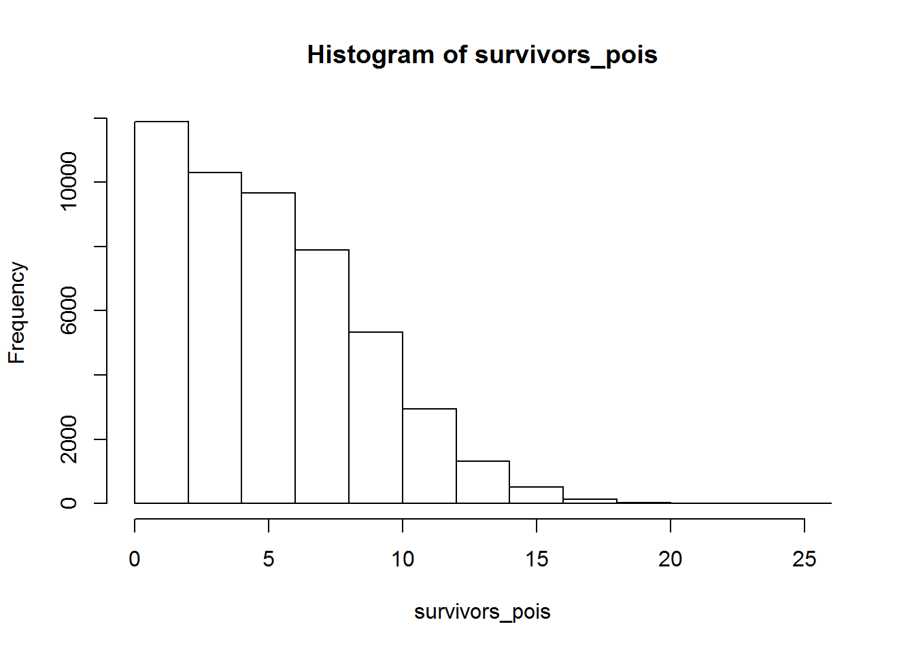
hist(survivors_bin)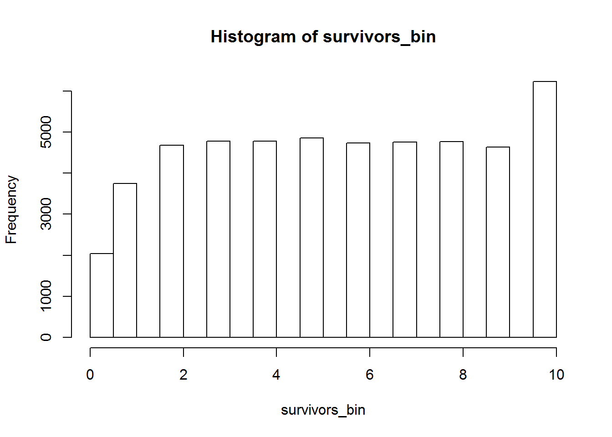
Hmmm, not super convenient to compare, let’s use the par() function to plot the histograms in a single plot so we can visualize them together. Recall the mfrow input allowed us to change how each plot is added to the main plot area. The default is c(1,1) which plots a single plot. We can change this by mfrow=c(2,1) which plots a 2 rows by 1 column (i.e., 2 plots on top of each other). We will also want to make sure to set the x-axes to the same values to facilitate comparison.
par(mfrow=c(2,1))
hist(survivors_pois,
xlim=c(0,10))
hist(survivors_bin,
xlim=c(0,10))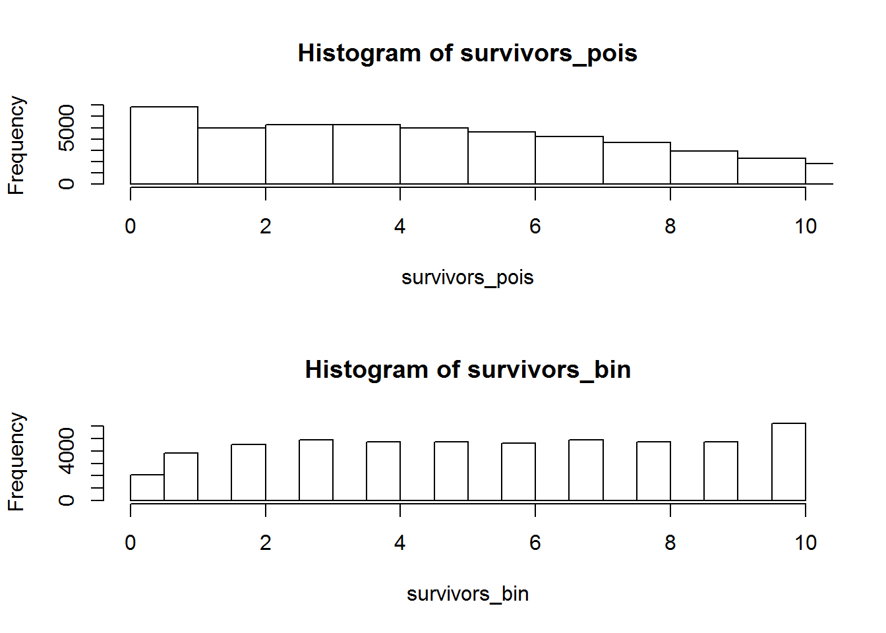
Finer point of stochastic simulation
sims<- expand.grid(N=N,S=S,reps=c(1:500))
sims$surv_pois<-rpois(n=nrow(sims),lambda=sims$S*sims$N)
sims$surv_bin<- rbinom(n=nrow(sims),size=sims$N,prob=sims$S)boxplot(surv_pois~N,data=sims)
boxplot(surv_bin~N,data=sims,add=TRUE,col='grey')
Ok that is not very useful, the boxplots cover each other up. We need to move them over a bit. The at argument allows us to shift the boxplots.
boxplot(surv_pois~S,data=sims,
at=1:length(S)-0.25)
boxplot(surv_bin~S,data=sims,add=TRUE,col='grey',
at=1:length(S)+0.25)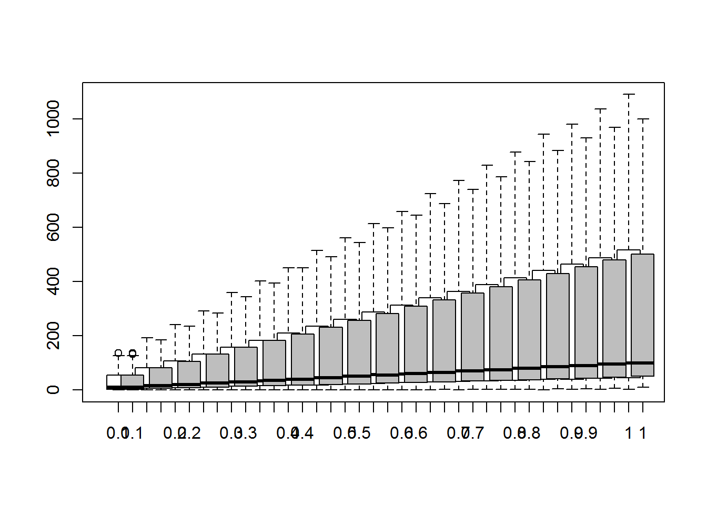
Now we need to tackle a couple more issues, first we need to make the boxplots narrower and then clean up the axes. The arguments boxwex and xaxt will help.
boxplot(surv_pois~S,data=sims,
at=1:1:length(S)-0.25,
subset=N==10,
boxwex=0.25, # make boxplot narrower
xaxt='n') # suppress x-axis label plotting
boxplot(surv_bin~S,data=sims,add=TRUE,col='grey',
at=1:1:length(S)+0.25,
subset=N==10,
boxwex=0.25,
xaxt='n')
axis(side=1,at=1:length(S),labels=S)
legend("topleft",legend=c("Poisson","Binomial"),
fill=c("white","grey"))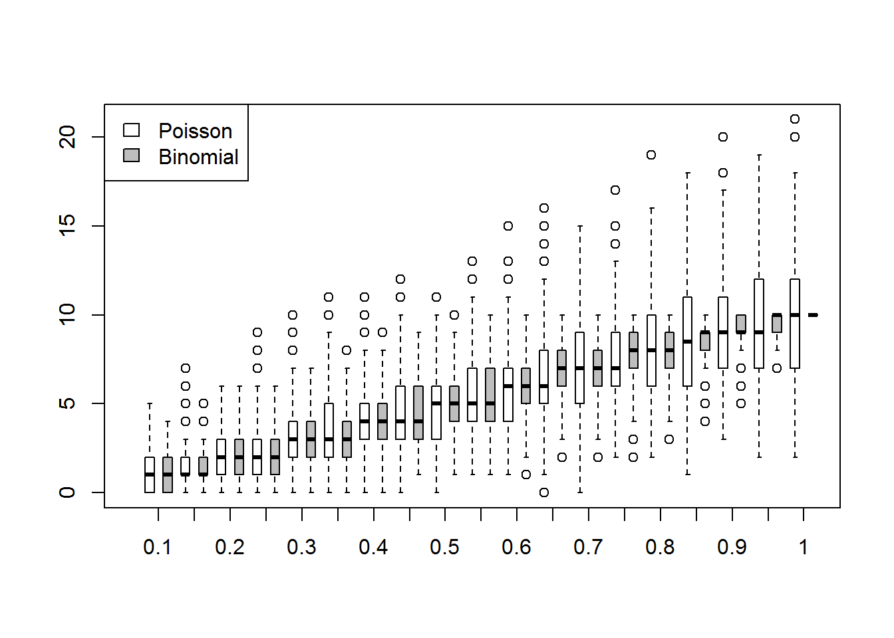
The plot of above shows that values are similar to at low S values, but as it increases, survivors exceeds abundance. This is spontaneous generation!
Lets look at the other extreme where abundance was 1000. The values at lower S values are similar between the binomial and the Poisson and similarity decreases as S increases.
boxplot(surv_pois~S,data=sims,
at=1:length(S)-0.25,
subset=N==1000,
boxwex=0.25, # make boxplot narrower
xaxt='n') # suppress x-axis label plotting
boxplot(surv_bin~S,data=sims,add=TRUE,col='grey',
at=1:length(S)+0.25,
subset=N==1000,
boxwex=0.25,
xaxt='n')
axis(side=1,at=1:length(S),labels=S)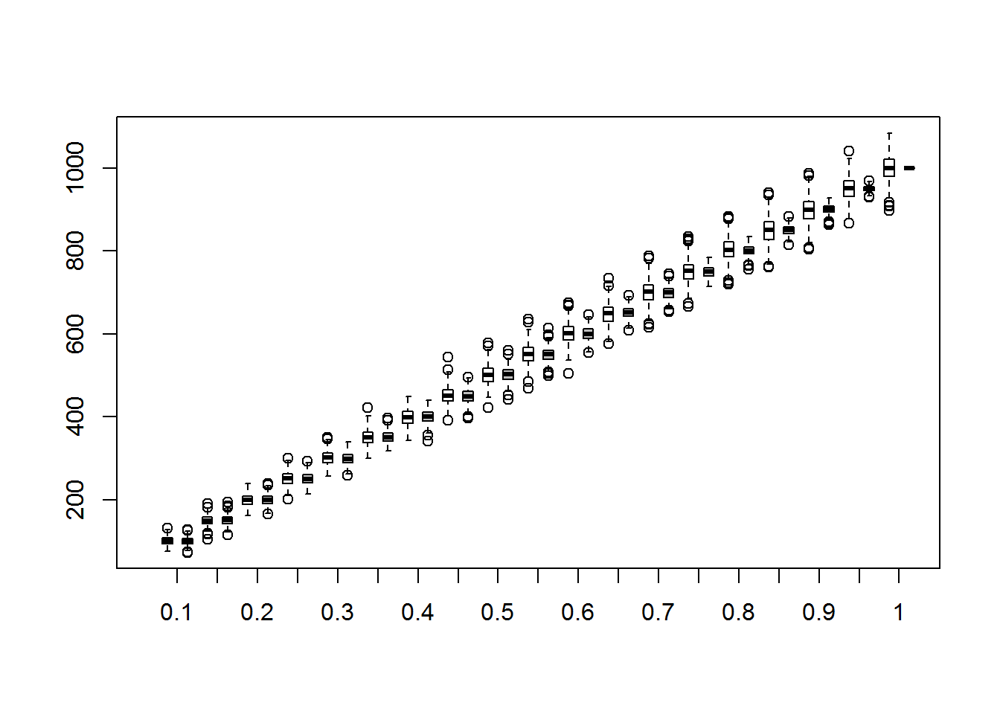
One thing you will notice is that the range for the Poisson increases with survival. Recall that lambda was S*N so as S increases so does lambda. In this case lambda is the mean.
One of the properties of the Poisson distributional is that the mean and the variance are the same! Let’s confirm. First we need to create lambda as N*S
sims$lambda<- sims$N*sims$S
vars<- aggregate(surv_pois~lambda,sims,var)
plot(surv_pois~lambda,data=vars,
xlab="Lambda",
ylab="Variance")
abline(0,1)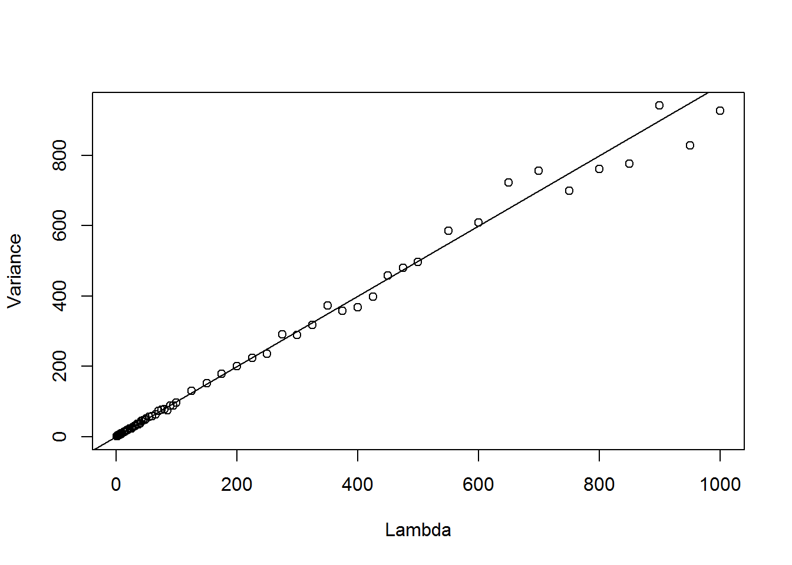
There is a bit of noise around the 1:1 line, but that is to be expected because we only did 500 stochastic replicates. If many more were done they would fall exactly on the 1:1 line. Don’t believe me? Try it yourself. Challenge accepted?
So one of the major differences between the binomial and the Poisson is that the Poisson can exceed the population abundance if survival is high. This is because the Poisson calculates the number of outcomes without constraining by the number of trials. The binomial constrains outcomes such that the successes cannot exceed the number of trials. Regardless the Poisson is very useful.
The models
For a generalized linear model we can use the same linear model as we have before but we use the log function to link predictions of the linear model to the statistical model.
\[\log(\lambda_{i}) = \beta_{0}+\beta_{j}\cdot X_{i,j}\]
where
- \(\beta_{0}\) is the intercept of the linear model,
- \(\beta_{1}\) is the effect of covariate X,
- \(j\) indexes each covariate,
- \(i\) indexes each observation, and
- \(\mu_{i}\) is the predicted count for the ith observation.
And the statistical model linking the observed data to the linear model predictions is:
\[ Y_{i} \sim Poisson(\lambda_{i})\]
where,
- \(Y_{i}\) is the ith observation,
- \(i\) indexes each observation, and
- \(\mu_{i}\) is the predicted count for the ith observation.
Let’s look at some common natural resource data where the expected outcomes are Poisson distributed, fit a model to the data, and generate expected outcomes.
Example-Fish counts
The data
In fisheries and wildlife we commonly calculate catch per unit effort by dividing counts by the effort. For example, in backpack electrofishing, the number of a fish species captured and the number of seconds of shocking is used to calculate catch per unit effort as \(\frac{\text{Catch}}{\text{Effort}}\). This value can be related to covariates as
\[\frac{\text{Catch}_i}{\text{Effort}_i} = beta_{0}+\beta_{j}\cdot X_{i,j}\]
where the parameters are as defined above. With some fun with logarithms we can actually model counts using a Poisson distribution.
Why would we want to do this? Well, glad you asked, catch per unit effort is not normally distributed, it is constrained to be greater than or equal to 0. The other issue is that there are commonly catch per unit efforts of 0 which can wreak havoc with log transformations commonly used to meet assumptions. But check this out, if we take the log of the left hand side we can do some nifty things.
\[log(\frac{\text{Catch}_i}{\text{Effort}_i})= beta_{0}+\beta_{j}\cdot X_{i,j}\]
Which with some law of logarithms we get (i.e., \(log\frac{a}{b} = log(a)-log(b)\):
\[log(\text{Catch}_i) = beta_{0}+\beta_{j}\cdot X_{i,j}+log({\text{Effort}_i})\]
and with converting this model to a linear predictor and linking that prediction to a statistical model as:
\[log(\lambda_i) = beta_{0}+\beta_{j}\cdot X_{i,j}+log({\text{Effort}_i})\]
and
\[\text{Catch}_i \sim Poisson(\lambda_i)\].
Now we are predicting the number of critters captured but accounting for the known effect of effort (i.e., more effort, more critters captured). Notice there is no \(\beta\) associated with Effort, this is what is known as an offset. An offset is when there is a known relation with the response variable, effort in this case. Other examples might be area or some other measurement of size. Think about this aspect the next time you divide a count to normalize. Let’s see how to use this in R.
Let’s read in some data to get a better feel for what I am talking about.
fishCounts<- read.csv("fishCounts.csv")
fishCounts## width habitat streamLength counts
## 1 0.8 ag 40 2
## 2 1.0 ag 50 3
## 3 1.0 forest 50 74
## 4 0.5 ag 25 0
## 5 0.6 forest 30 16
## 6 0.7 urban 35 11
## 7 0.5 ag 25 1
## 8 0.7 urban 35 14
## 9 0.6 forest 30 21
## 10 0.6 urban 30 9
## 11 0.6 forest 30 17
## 12 0.7 forest 35 27
## 13 0.9 urban 45 20
## 14 0.8 urban 40 16
## 15 1.0 urban 50 34
## 16 1.1 forest 55 110
## 17 0.8 urban 40 23
## 18 0.7 forest 35 22
## 19 0.6 ag 30 0
## 20 1.0 ag 50 4
## 21 1.0 urban 50 33
## 22 1.0 ag 50 3
## 23 0.7 ag 35 2
## 24 0.8 ag 40 3
## 25 0.8 forest 40 45
## 26 1.2 urban 60 53
## 27 0.6 ag 30 0
## 28 0.7 ag 35 2
## 29 0.5 urban 25 4
## 30 0.9 ag 45 2
## 31 1.3 forest 65 191
## 32 1.2 ag 60 10
## 33 0.8 urban 40 12
## 34 1.0 forest 50 78
## 35 0.5 forest 25 20
## 36 0.9 forest 45 49
## 37 1.2 urban 60 68
## 38 0.6 forest 30 14
## 39 1.1 forest 55 98
## 40 0.5 forest 25 16
## 41 0.9 forest 45 55
## 42 0.9 forest 45 52
## 43 0.8 forest 40 31
## 44 0.7 forest 35 21
## 45 1.2 ag 60 12
## 46 0.8 urban 40 12
## 47 0.7 urban 35 10
## 48 0.6 forest 30 12
## 49 0.7 ag 35 0
## 50 0.9 urban 45 23
## 51 0.6 ag 30 2
## 52 0.5 ag 25 1
## 53 0.9 forest 45 46
## 54 0.9 urban 45 21
## 55 0.6 forest 30 20
## 56 0.9 forest 45 54
## 57 0.7 forest 35 27
## 58 1.0 ag 50 2
## 59 1.0 urban 50 31
## 60 1.3 forest 65 201
## 61 1.2 ag 60 17
## 62 1.0 forest 50 94
## 63 0.6 ag 30 0
## 64 1.2 forest 60 143
## 65 0.7 ag 35 3
## 66 1.0 urban 50 31
## 67 1.2 forest 60 135
## 68 0.5 urban 25 5
## 69 0.9 forest 45 36
## 70 0.6 ag 30 2
## 71 0.8 forest 40 32
## 72 0.8 ag 40 3
## 73 0.8 ag 40 3
## 74 0.5 forest 25 7
## 75 1.3 urban 65 80
## 76 0.9 forest 45 64
## 77 0.8 forest 40 41
## 78 1.0 forest 50 72
## 79 0.6 forest 30 19
## 80 0.7 forest 35 23
## 81 1.0 urban 50 32
## 82 0.5 forest 25 13
## 83 1.0 urban 50 25
## 84 0.9 ag 45 3
## 85 1.2 ag 60 7
## 86 0.5 urban 25 5
## 87 1.2 ag 60 17The dataset has 4 columns and 87 observations. Typically in stream surveys we allocate effort proportional to the width of the stream, in this case the stream length surveyed was 50 times the stream width. Now the stream lengths won’t exactly be 50 times the width there is some rounding involved so you don’t stop in the middle of a habitat unit. The expectation is that if you should get more fish if you sample 100 relative to 10 meters of stream. This is a known relationship, hence we commonly convert counts to densities by dividing the count by the length of stream sampled. We will fit a glm model to the data assuming the data are Poisson distributed and with an offset.
As we should, we plot the data to get a feel for what is going on. Recall we can think about R plots like a canvas where we can layer information on top of the plot. We have seen this before but the code below uses the tools we have learned to plot counts versus width by habitat type.
plot(counts~width,
data=fishCounts,
xlab="Width (m)",
ylab="Catch",
type='n',
las=1)
points(counts~width, data=fishCounts,
subset=habitat=="ag",col="red",pch=1)
points(counts~width, data=fishCounts,
subset=habitat=="forest",col="blue",pch=2)
points(counts~width, data=fishCounts,
subset=habitat=="urban",col="black",pch=3)
legend("topleft",legend=c("Agriculture","Forested","Urban"),
col=c("red","blue","black"),pch=c(1,2,3))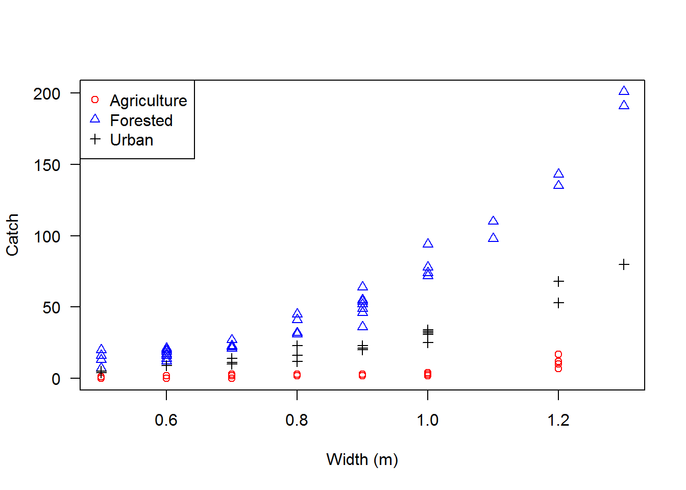
Looks pretty clear that forested streams have higher fish counts.
Now we can fit the the model using the glm() function using a Poisson family and we are going to… wait for it… add an offset.
Fitting the model to the data
Now that we have looked over the data we can fit a model to the data. We will use the glm() function as we have before, but this time we will use the poisson family by including the argument family="poisson". The model below predicts counts from steam width and depth and includes an offset of stream length to account for more critters being captured because more stream was sampled. One thing to know is that including stream length as an offset required a log transformation. Recall the law of logs demonstrated above?
fit<- glm(counts~width+habitat,
data=fishCounts,
offset=log(fishCounts$streamLength),# recall it is log
family="poisson")Now that the model is fit we can do all the goodies we usually do. First let’s look at the summary of the model.
summary(fit)##
## Call:
## glm(formula = counts ~ width + habitat, family = "poisson", data = fishCounts,
## offset = log(fishCounts$streamLength))
##
## Deviance Residuals:
## Min 1Q Median 3Q Max
## -2.45819 -0.78351 0.00079 0.40666 2.29291
##
## Coefficients:
## Estimate Std. Error z value Pr(>|z|)
## (Intercept) -4.62573 0.13278 -34.84 <2e-16 ***
## width 2.36015 0.08833 26.72 <2e-16 ***
## habitatforest 2.66198 0.10058 26.47 <2e-16 ***
## habitaturban 1.79340 0.10660 16.82 <2e-16 ***
## ---
## Signif. codes: 0 '***' 0.001 '**' 0.01 '*' 0.05 '.' 0.1 ' ' 1
##
## (Dispersion parameter for poisson family taken to be 1)
##
## Null deviance: 2419.170 on 86 degrees of freedom
## Residual deviance: 75.053 on 83 degrees of freedom
## AIC: 464.21
##
## Number of Fisher Scoring iterations: 4We can extract the model coefficients and profile the 95% confidence intervals.
betas<- coef(fit)
confint(fit)## Waiting for profiling to be done...## 2.5 % 97.5 %
## (Intercept) -4.889968 -4.369226
## width 2.187440 2.533701
## habitatforest 2.470491 2.865167
## habitaturban 1.589290 2.007599Evaluating the model
Couple of things we will want to check out.
- The model structure was correctly specified with a plot of observed versus predicted
- The variance is the same as the mean
fishCounts$pred<- fitted(fit)
fishCounts$res<- resid(fit)
plot(counts~pred,data=fishCounts)
abline(0,1) 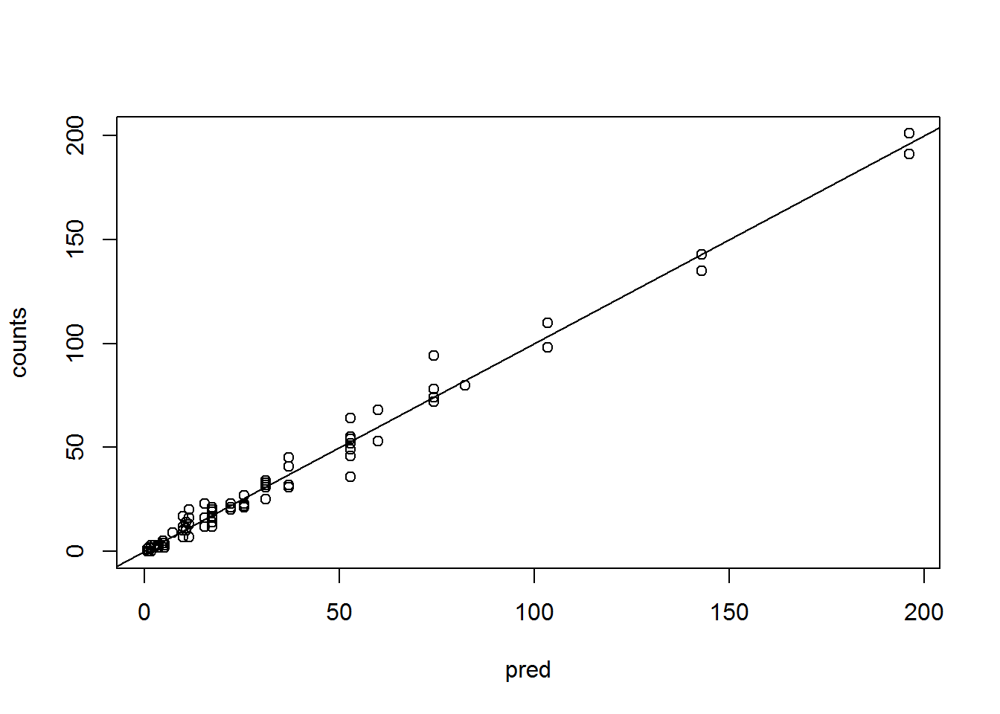 Now we can look at the residuals versus the fitted values.
plot(res~pred,data=fishCounts)
abline(h=0) 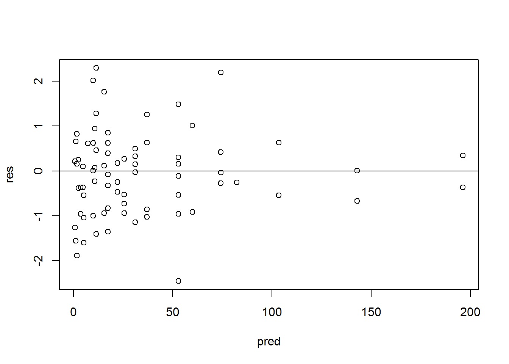 They look ok but since the variance increases with the mean we would expect fanning, we just happen to have few values that exceed 100 so it is difficult to diagnose.
Getting predictions and outcomes from the model
For management purposes we are most interested in getting predictions of the expected outcomes.
# do 4 streams with varying depths and land cover
preddat<-data.frame(
width=c(1.3,1.05,0.65,0.7,0.65,0.95),
habitat=c("forest","forest","urban","urban","ag","ag"),
streamLength=c(123,324,75,84,68,98))
# preddat$lambda<- predict(fit,newdata=preddat,
# type="response") # does not work Well that did not work. Unfortunately the predict() function does not use the offset. Lemons to lemonade. We have all the skills to make predictions on our own, all we need to do is extract the betas which we have already done and then multiply them and add them up.
preddat$lambda<- NA # prep vector to fill
preddat[preddat$habitat=="ag",]$lambda<- exp(betas[1]+
preddat[preddat$habitat=="ag",]$width*betas[2]+
log(preddat[preddat$habitat=="ag",]$streamLength))
preddat[preddat$habitat=="forest",]$lambda<- exp(betas[1]+
preddat[preddat$habitat=="forest",]$width*betas[2]+
betas[3]+
log(preddat[preddat$habitat=="forest",]$streamLength))
preddat[preddat$habitat=="urban",]$lambda<- exp(betas[1]+
preddat[preddat$habitat=="urban",]$width*betas[2]+
betas[4]+
log(preddat[preddat$habitat=="urban",]$streamLength))
preddat ## width habitat streamLength lambda
## 1 1.30 forest 123 371.160048
## 2 1.05 forest 324 541.939756
## 3 0.65 urban 75 20.475988
## 4 0.70 urban 84 25.805538
## 5 0.65 ag 68 3.089091
## 6 0.95 ag 98 9.037493Accounting for uncertainty
It is always good to account for uncertainty and generate expected outcomes. We have gone over simulation as a way to figure out those outcomes. Suppose I want to get the 95% prediction interval for a lamba of 10. We can generation many stochastic replicates and either sort and figure out the what values falls is the 250th and which one is 9750th if you simulated 10,000 replicates.
xx<-rpois(10000,10)
xx<- sort(xx)
xx[250]## [1] 4xx[9750]## [1] 17Or we can use the quantile() function. This function returns user specifed values.
vals<-quantile(x=xx,probs=c(0.025,0.975))
vals## 2.5% 97.5%
## 4 17Neat they are the same as above.
We can also ue some more flexibility and use the qpois() function. This function returns the value for quantile you specify given the required distribuation inputs, lamba in the case of the Poisson.
vals2<- qpois(c(0.025,0.975),lambda=10)
vals2## [1] 4 17Cool beans 1, same as the other 2 methods. Usind the qpois() we can generate the 95% prediction intervals pretty easily for our predicted values in preddat.
preddat$uci<-qpois(0.975, preddat$lambda)
preddat$lci<-qpois(0.025, preddat$lambda)Boomtown, now things are working.
Calculating the probability of an outcome
In management decisions we need to calculate the probability of all the possible outcomes. We have found that this can be a real challenge to do when working with continuous outcomes that require discretization. However for discrete outcomes like the poisson things get a bit easier and we can predict the probability of a range of outcomes.
Using preddat we can calculate the probability of 0 to 1000 fish. I chose those numbers to sufficiently cover all possible outcomes. The larges 95% prediction interval was 497, so maxxing out at 1000 should cover it.
# MAKE A MATRIX TO STORE OUR PRECIOUS PROBABILITIES
outcomes<- matrix(0,nrow=1001,ncol=nrow(preddat))Now instead of using the qpois() function that returns a value, I am going to use the cpois() function that returns the probability of an outcome. For example the code belows returns the probability of a 3, 10 or 17 given a lambda equal to 10.
dpois(x=3,lambda=10) # should be pretty low## [1] 0.007566655dpois(x=10,lambda=10) # about mid of the road## [1] 0.12511dpois(x=17,lambda=10) # close to 1## [1] 0.012764We can use a for() loop to get the cumlative probabilities for the predicted values.
for(i in 1:nrow(preddat))# loop over each row of predat
{
outcomes[,i]<-dpois(c(0:1000),lambda=preddat$lambda[i])
}Now if we did this right the columns should sum to 1. Let’s check.
colSums(outcomes)## [1] 1 1 1 1 1 1Yep they do. That is a nice property of a discrete outcome that results from a poisson.
We can take a look at the expected outcomes. We are more curious here so let’s not get too fancy an simply use the matlines() function.
matplot(y=outcomes,type='l',lwd=3)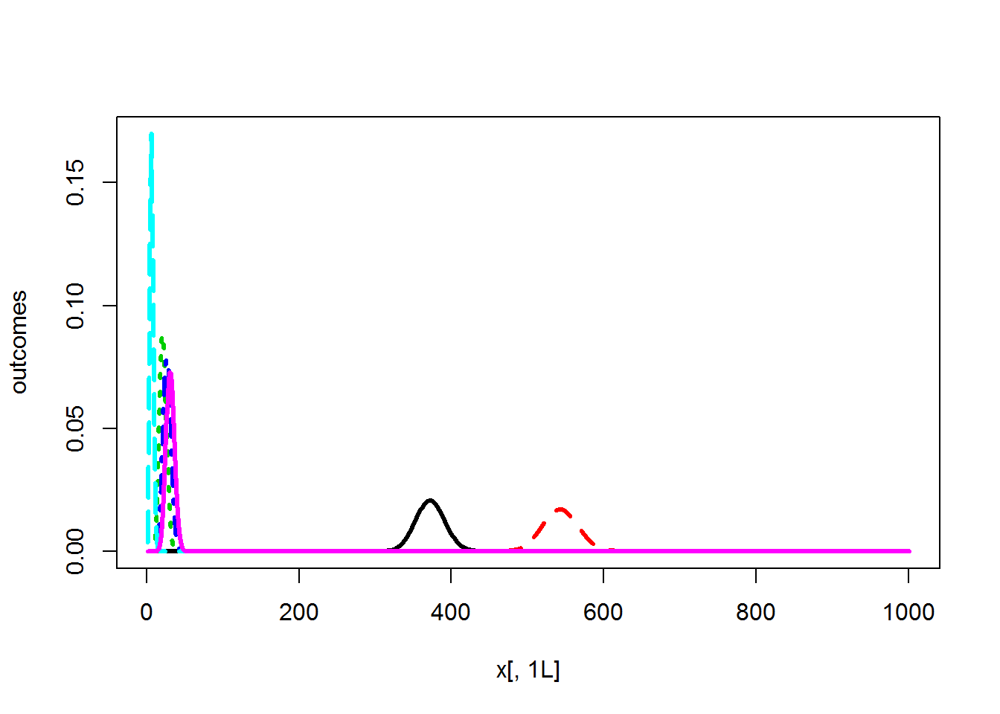
Couple of things to notice, as lamba increases the spread of outcomes increases.
With our new found skills let’s circle back and add prediction intervals to our model of fish counts. First we need to make an other dataset to predict from.
preddat<-expand.grid( # MAKE DATASET
width=c(1.3,1.05,0.65,0.7,0.65,0.95),
habitat=c("forest","urban","ag"),
streamLength=c(25:65))
preddat$lambda<- NA # prep vector to fill
# PREDICT LAMBDA
preddat[preddat$habitat=="ag",]$lambda<- exp(betas[1]+
preddat[preddat$habitat=="ag",]$width*betas[2]+
log(preddat[preddat$habitat=="ag",]$streamLength))
preddat[preddat$habitat=="forest",]$lambda<- exp(betas[1]+
preddat[preddat$habitat=="forest",]$width*betas[2]+
betas[3]+
log(preddat[preddat$habitat=="forest",]$streamLength))
preddat[preddat$habitat=="urban",]$lambda<- exp(betas[1]+
preddat[preddat$habitat=="urban",]$width*betas[2]+
betas[4]+
log(preddat[preddat$habitat=="urban",]$streamLength)) Now we can use the qpois() function to get our 95% prediction intervals.
preddat$uci<-qpois(0.975, preddat$lambda)
preddat$lci<-qpois(0.025, preddat$lambda)And we can make a pretty plot to go with it. But recall we need to account for stream length.
plot(uci~width,data=preddat,
xlab="Stream width",
ylab="Fish count",
subset=streamLength==25,
type='n')
points(lambda~width,data=preddat,
subset=streamLength==25 & habitat=="forest",
lty=1,type='l')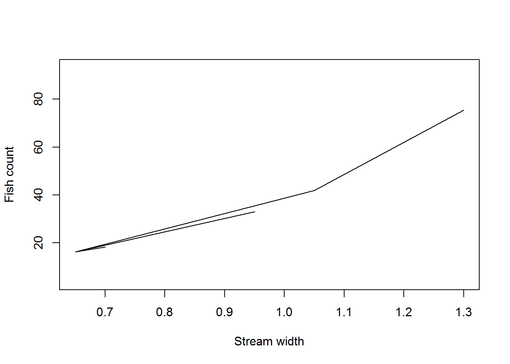 Boo, that looks terrible. Ok what is going on here is that R plots things sequentially so when we subset the order was not quite right. We can fix it by sorting our dataset by multiple variables using the order() function.
preddat<- preddat[order(preddat$streamLength,preddat$width),]Now let’s try that plot again.
plot(uci~width,data=preddat,
xlab="Stream width",
ylab="Fish count",
subset=streamLength==25,
type='n',
las=1)
points(lambda~width,data=preddat,
subset=streamLength==25 & habitat=="forest",
lty=1,type='l')
points(lci~width,data=preddat,
subset=streamLength==25 & habitat=="forest",
lty=2,type='l')
points(uci~width,data=preddat,
subset=streamLength==25 & habitat=="forest",
lty=2,type='l')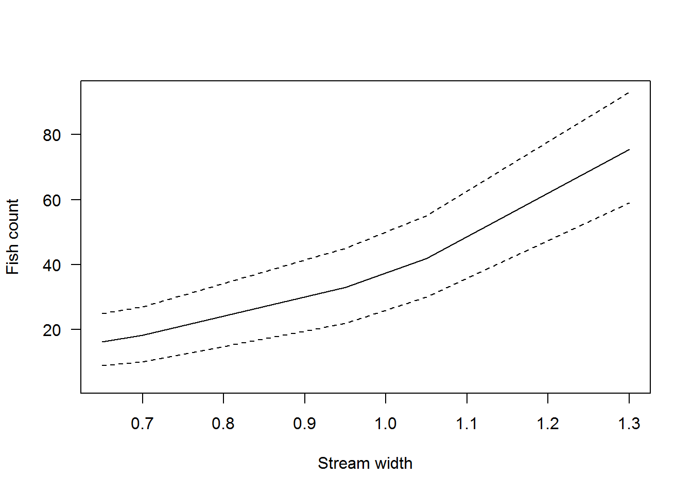
Example-stem counts
The data
Here is an example of stem counts following a treatment of no, partial, or full burns in varying habitats. Additionally, there was an effect of elevation.
stemCounts<- read.csv("stemCounts.csv")
head(stemCounts)## treatment habitat elevation counts
## 1 partial burn mixed hardwood 52 387
## 2 full burn riparian 9 135
## 3 partial burn field 66 36
## 4 full burn pine 110 306
## 5 no burn pine 31 107
## 6 partial burn pine 128 151plot(counts~elevation,data=stemCounts,
xlab="Elevation",
ylab="Stem counts",
las=1,
type='n')
points(counts~elevation,data=stemCounts,
subset=treatment=="no burn" & habitat=="field",
pch=1,col="red")
points(counts~elevation,data=stemCounts,
subset=treatment=="no burn" & habitat=="riparian",
pch=2,col="red")
points(counts~elevation,data=stemCounts,
subset=treatment=="no burn" & habitat=="mixed hardwood",
pch=3,col="red")
points(counts~elevation,data=stemCounts,
subset=treatment=="no burn" & habitat=="pine",
pch=4,col="red")
points(counts~elevation,data=stemCounts,
subset=treatment=="partial burn" & habitat=="field",
pch=1,col="blue")
points(counts~elevation,data=stemCounts,
subset=treatment=="partial burn" & habitat=="riparian",
pch=2,col="blue")
points(counts~elevation,data=stemCounts,
subset=treatment=="partial burn" & habitat=="mixed hardwood",
pch=3,col="blue")
points(counts~elevation,data=stemCounts,
subset=treatment=="partial burn" & habitat=="pine",
pch=4,col="blue")
points(counts~elevation,data=stemCounts,
subset=treatment=="full burn" & habitat=="field",
pch=1,col="green")
points(counts~elevation,data=stemCounts,
subset=treatment=="full burn" & habitat=="riparian",
pch=2,col="green")
points(counts~elevation,data=stemCounts,
subset=treatment=="full burn" & habitat=="mixed hardwood",
pch=3,col="green")
points(counts~elevation,data=stemCounts,
subset=treatment=="full burn" & habitat=="pine",
pch=4,col="green")
legend("topleft",legend=c("No burn", "Partial burn", "Full burn",
"Field","Riparian","Mixed hardwood", "Pines"),
pch=c(1,1,1,1,1,2,3,4),col=c("red","blue","green","black","black",
"black","black"),ncol=2)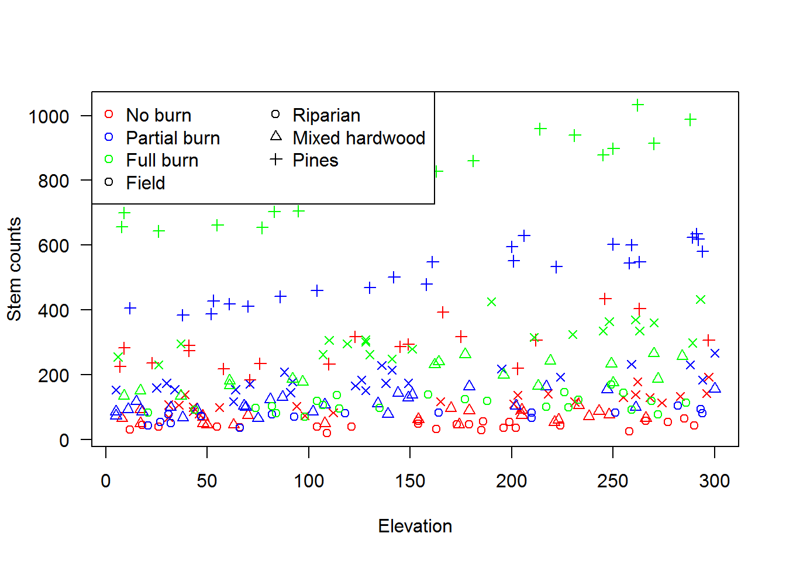
Thinks look like fun. Let’s fit our model!
fit<- glm(counts~treatment+habitat+elevation,
data=stemCounts,
family="poisson")
summary(fit)##
## Call:
## glm(formula = counts ~ treatment + habitat + elevation, family = "poisson",
## data = stemCounts)
##
## Deviance Residuals:
## Min 1Q Median 3Q Max
## -6.0996 -1.4645 -0.0701 1.3419 5.3218
##
## Coefficients:
## Estimate Std. Error z value Pr(>|z|)
## (Intercept) 4.483e+00 1.657e-02 270.62 <2e-16 ***
## treatmentno burn -1.013e+00 1.109e-02 -91.34 <2e-16 ***
## treatmentpartial burn -4.964e-01 8.929e-03 -55.59 <2e-16 ***
## habitatmixed hardwood 2.002e+00 1.532e-02 130.70 <2e-16 ***
## habitatpine 1.016e+00 1.673e-02 60.72 <2e-16 ***
## habitatriparian 5.532e-01 1.829e-02 30.25 <2e-16 ***
## elevation 1.490e-03 4.394e-05 33.91 <2e-16 ***
## ---
## Signif. codes: 0 '***' 0.001 '**' 0.01 '*' 0.05 '.' 0.1 ' ' 1
##
## (Dispersion parameter for poisson family taken to be 1)
##
## Null deviance: 48221.1 on 266 degrees of freedom
## Residual deviance: 1090.1 on 260 degrees of freedom
## AIC: 2952
##
## Number of Fisher Scoring iterations: 4We can do all the things we did before.
betas<- coef(fit)
confint(fit)## Waiting for profiling to be done...## 2.5 % 97.5 %
## (Intercept) 4.45071774 4.515659291
## treatmentno burn -1.03500035 -0.991518902
## treatmentpartial burn -0.51389142 -0.478891142
## habitatmixed hardwood 1.97228881 2.032341043
## habitatpine 0.98321718 1.048804941
## habitatriparian 0.51737743 0.589065891
## elevation 0.00140401 0.001576263We can extract the fitted to look at model specification.
stemCounts$fitted<-fitted(fit)
plot(counts~fitted, data= stemCounts,
xlab="Predicted values",
ylab="Counts",
las=1)
abline(0,1)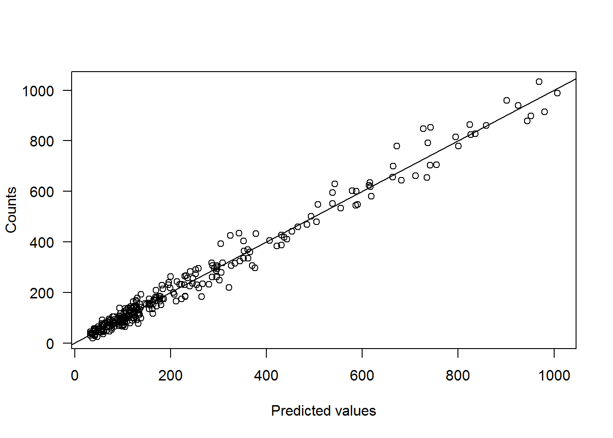
That seems ok, although it looks a bit funny near 1000, it fans a bit, which is something we have not seen. Lets carry on and get some predictions out of this beasts. First we need to make a new data.frame() that contains the possible combinations of elevation, habitat, and treatment we want to evaluate.
preddat<- expand.grid(
treatment=levels(stemCounts$treatment),
habitat=levels(stemCounts$habitat),
elevation=c(min(stemCounts$elevation):max(stemCounts$elevation)))Fortunately we do not have an offset so it is easy peasy to predict the counts for our new data.frame().
preddat$lambda<- predict(fit, newdata=preddat,
type='response')And we can get the 95% prediction interval.
preddat$lci<-qpois(0.025,preddat$lambda)
preddat$uci<-qpois(0.975,preddat$lambda)And now the fun begins. Because we do not have an offset we can simply plot the data and the prediction intervals. Let’s look at the no burn treatment.
plot(counts~elevation,data=stemCounts,
xlab="Elevation",
ylab="Stem counts",
las=1,
type='n',subset=treatment=="no burn")
points(counts~elevation,data=stemCounts,
subset=treatment=="no burn" & habitat=="field",
pch=1,col="black")
## PLOT 95% PREDICTION INTERVALS
points(lci~elevation,data=preddat,
subset=treatment=="no burn" & habitat=="field",
type='l',col="black",lty=2)
points(uci~elevation,data=preddat,
subset=treatment=="no burn" & habitat=="field",
type='l',col="black",lty=2)
points(counts~elevation,data=stemCounts,
subset=treatment=="no burn" & habitat=="riparian",
pch=2,col="green")
points(lci~elevation,data=preddat,
subset=treatment=="no burn" & habitat=="riparian",
type='l',col="green",lty=2)
points(uci~elevation,data=preddat,
subset=treatment=="no burn" & habitat=="riparian",
type='l',col="green",lty=2)
points(counts~elevation,data=stemCounts,
subset=treatment=="no burn" & habitat=="mixed hardwood",
pch=3,col="red")
points(lci~elevation,data=preddat,
subset=treatment=="no burn" & habitat=="mixed hardwood",
type='l',col="red",lty=2)
points(uci~elevation,data=preddat,
subset=treatment=="no burn" & habitat=="mixed hardwood",
type='l',col="red",lty=2)
points(counts~elevation,data=stemCounts,
subset=treatment=="no burn" & habitat=="pine",
pch=4,col="blue")
points(lci~elevation,data=preddat,
subset=treatment=="no burn" & habitat=="pine",
type='l',col="blue",lty=2)
points(uci~elevation,data=preddat,
subset=treatment=="no burn" & habitat=="pine",
type='l',col="blue",lty=2) 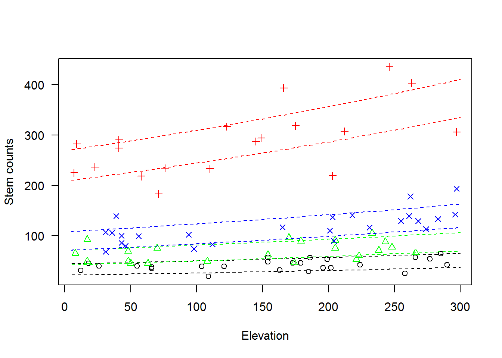
Ok, it might just be me but I was not expecting there to be a bunch of points outside of the the 95% prediction intervals. What is going on here, not that epic 90s song 2.
Accounting for overdispersion
What we have going on here is what is called over dispersion. Recall that for the Poisson the variance is equal to the mean? Well, if there is extra variation, as there must be in this case because the observed data exceeds the 95% prediction intervals, there is over dispersion. Fortunately it is easy to remedy. There is another family that can be used with glm() the quasipoisson family. The quasipoisson estimates a dispersion parameter, values greater than 1 indicate over dispersion and values less than 1 indicate under dispersion. The poisson family used in glm() assumes the dispersion parameter is 1.
Let’s fit the same data but this time assuming a quasipoisson distribution.
fit<- glm(counts~treatment+habitat+elevation,
data=stemCounts,
family="quasipoisson")
summary(fit)##
## Call:
## glm(formula = counts ~ treatment + habitat + elevation, family = "quasipoisson",
## data = stemCounts)
##
## Deviance Residuals:
## Min 1Q Median 3Q Max
## -6.0996 -1.4645 -0.0701 1.3419 5.3218
##
## Coefficients:
## Estimate Std. Error t value Pr(>|t|)
## (Intercept) 4.483e+00 3.382e-02 132.55 <2e-16 ***
## treatmentno burn -1.013e+00 2.265e-02 -44.74 <2e-16 ***
## treatmentpartial burn -4.964e-01 1.823e-02 -27.23 <2e-16 ***
## habitatmixed hardwood 2.002e+00 3.128e-02 64.02 <2e-16 ***
## habitatpine 1.016e+00 3.416e-02 29.74 <2e-16 ***
## habitatriparian 5.532e-01 3.734e-02 14.81 <2e-16 ***
## elevation 1.490e-03 8.972e-05 16.61 <2e-16 ***
## ---
## Signif. codes: 0 '***' 0.001 '**' 0.01 '*' 0.05 '.' 0.1 ' ' 1
##
## (Dispersion parameter for quasipoisson family taken to be 4.168425)
##
## Null deviance: 48221.1 on 266 degrees of freedom
## Residual deviance: 1090.1 on 260 degrees of freedom
## AIC: NA
##
## Number of Fisher Scoring iterations: 4Ohh a dispersion parameter of 7.5 that is pretty high and supports our inclination that there was some overdispersion. Now let’s calculate the 95% prediction intervals. This is done using the negative binomial distribution where the size is $/(dispersion-1) and \(\mu = \lambda\).
preddat<- expand.grid(
treatment=levels(stemCounts$treatment),
habitat=levels(stemCounts$habitat),
elevation=c(min(stemCounts$elevation):max(stemCounts$elevation)))
preddat$lambda<- predict(fit, newdata=preddat,
type='response')And we can get the 95% prediction interval.
dispersion<- summary(fit)$dispersion # GET DISPERSION
preddat$lci<-qnbinom(0.025, size=(preddat$lambda/(dispersion-1)),
mu=preddat$lambda)
preddat$uci<-qnbinom(0.975, size=(preddat$lambda/(dispersion-1)),
mu=preddat$lambda)Let’s plot the prediction intervals again and see if they make more sense.
plot(counts~elevation,data=stemCounts,
xlab="Elevation",
ylab="Stem counts",
las=1,
type='n',subset=treatment=="no burn")
points(counts~elevation,data=stemCounts,
subset=treatment=="no burn" & habitat=="field",
pch=1,col="black")
## PLOT 95% PREDICTION INTERVALS
points(lci~elevation,data=preddat,
subset=treatment=="no burn" & habitat=="field",
type='l',col="black",lty=2)
points(uci~elevation,data=preddat,
subset=treatment=="no burn" & habitat=="field",
type='l',col="black",lty=2)
points(counts~elevation,data=stemCounts,
subset=treatment=="no burn" & habitat=="riparian",
pch=2,col="green")
points(lci~elevation,data=preddat,
subset=treatment=="no burn" & habitat=="riparian",
type='l',col="green",lty=2)
points(uci~elevation,data=preddat,
subset=treatment=="no burn" & habitat=="riparian",
type='l',col="green",lty=2)
points(counts~elevation,data=stemCounts,
subset=treatment=="no burn" & habitat=="mixed hardwood",
pch=3,col="red")
points(lci~elevation,data=preddat,
subset=treatment=="no burn" & habitat=="mixed hardwood",
type='l',col="red",lty=2)
points(uci~elevation,data=preddat,
subset=treatment=="no burn" & habitat=="mixed hardwood",
type='l',col="red",lty=2)
points(counts~elevation,data=stemCounts,
subset=treatment=="no burn" & habitat=="pine",
pch=4,col="blue")
points(lci~elevation,data=preddat,
subset=treatment=="no burn" & habitat=="pine",
type='l',col="blue",lty=2)
points(uci~elevation,data=preddat,
subset=treatment=="no burn" & habitat=="pine",
type='l',col="blue",lty=2) 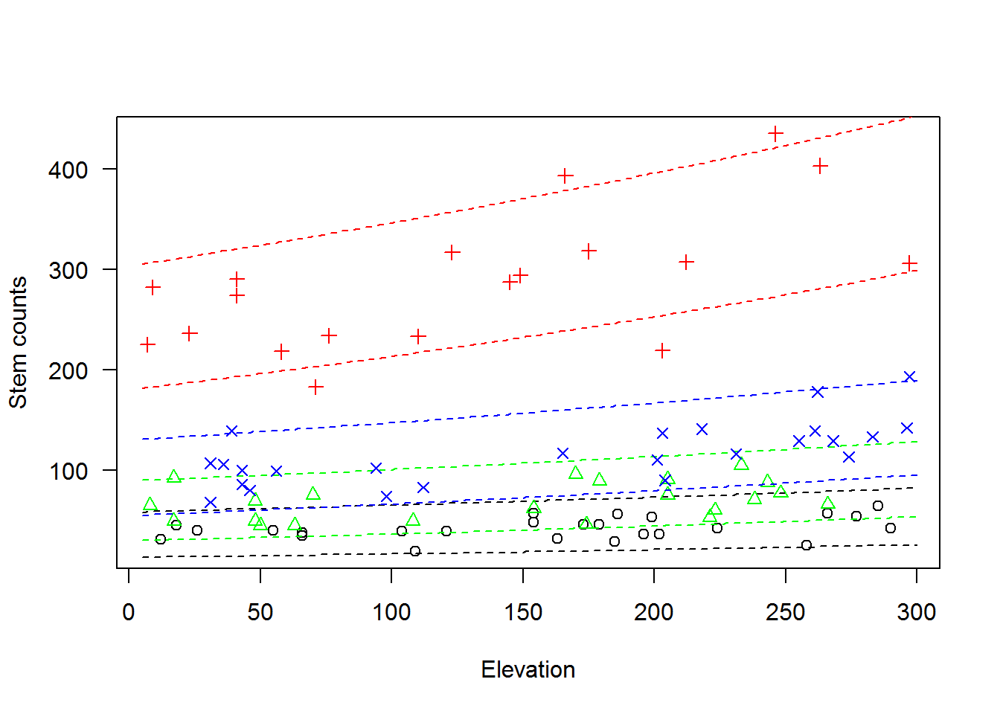
Ok, those look a ton better!
Now if you really wanted you could plot the rest of the prediction intervals for the remaining treatments.